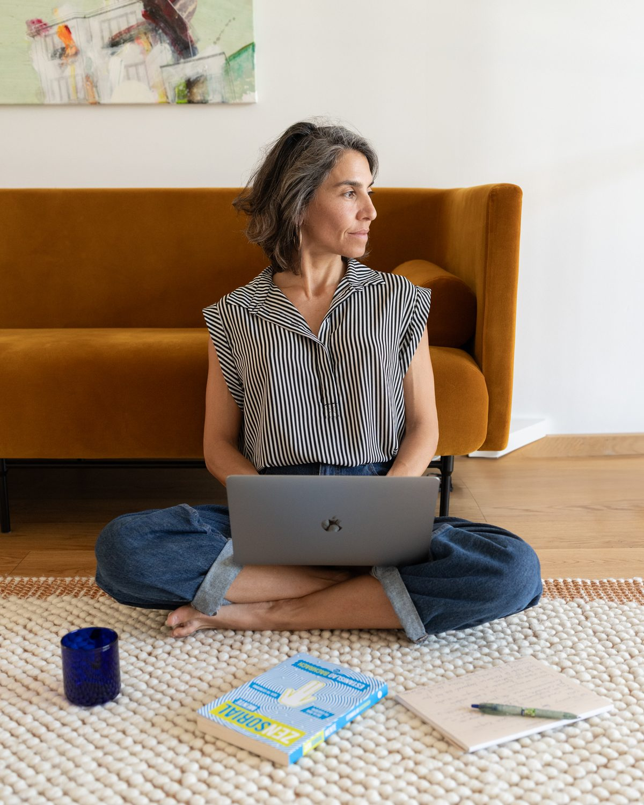

Para cuando necesitas detenerte, mirarte y ganar claridad, sin comprometerte a un proceso estructurado.
Las Sesiones Individuales son un espacio flexible de coaching para cuando necesitas orientación, claridad o simplemente hacer una pausa consciente.
No siguen una secuencia fija. Cada sesión crea espacio para reflexionar sobre lo que está presente en tu vida, ganar perspectiva y activar tu propia capacidad de respuesta.
Puedes elegir entre una sesión individual de aproximadamente 1 hora o una sesión profunda de aproximadamente 2 horas, según tu momento y lo que necesites trabajar.

Sesiones Individuales te ayudan a ganar claridad; Foco trabaja un patrón concreto con estructura y continuidad.
Las Sesiones no tienen un arco fijo. Foco sí: hay un patrón identificado, fases y continuidad sesión a sesión. Si todavía no sabes qué patrón quieres trabajar, las Sesiones Individuales son el lugar ideal para averiguarlo.
Los precios no se muestran públicamente. Se gestionan en la conversación inicial.
ALMAVIVA es neuroeducación, práctica somática y coaching integrativo — educación aplicada y acompañamiento, no terapia clínica ni tratamiento médico.
Si estás atravesando un momento que requiere apoyo terapéutico o psicológico especializado, este espacio no sustituye ese acompañamiento. En ese caso, lo más adecuado es buscar apoyo profesional especializado.
¿Es esto lo que necesitas ahora?
Una conversación inicial es el mejor punto de partida. Sin presión y sin compromiso.
Agendar conversación inicial →